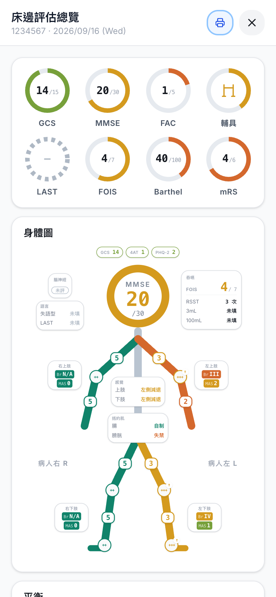
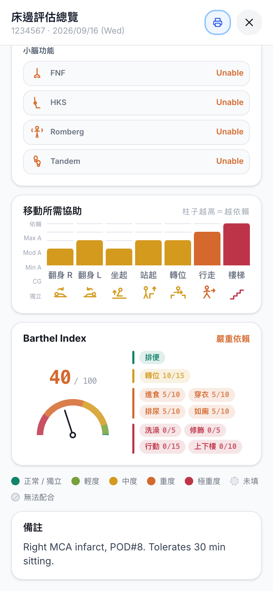
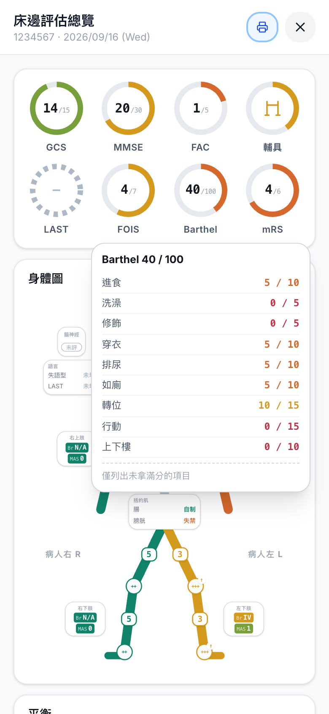
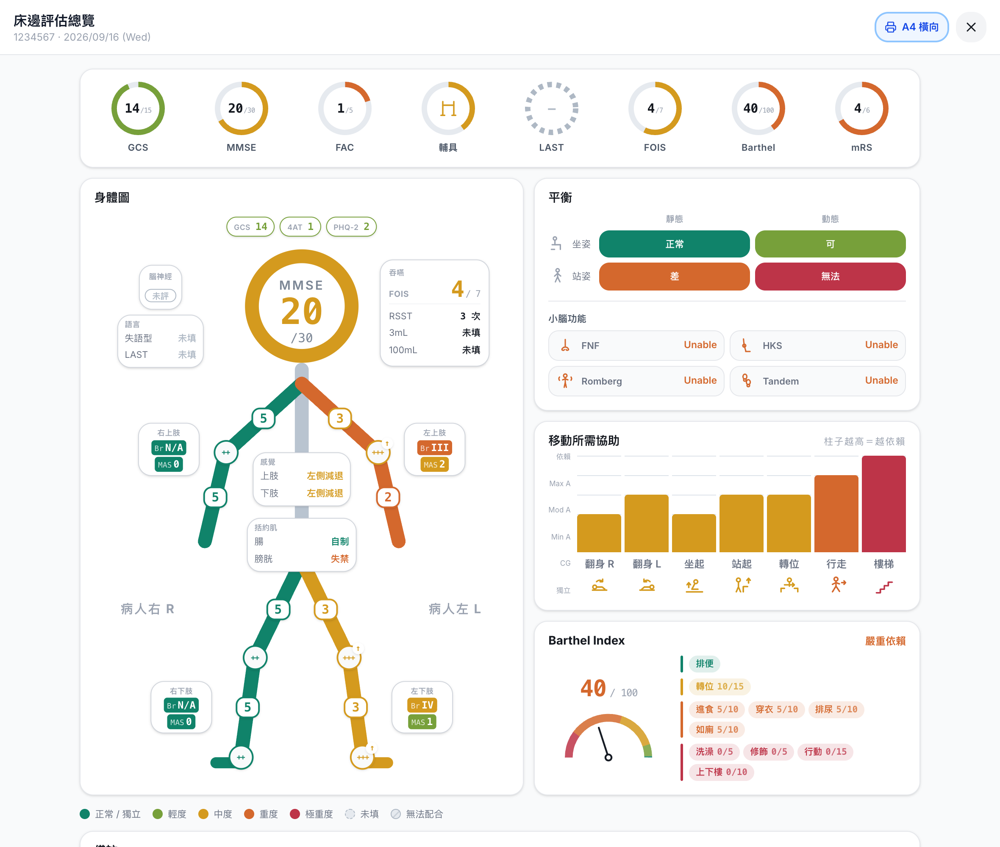

PM&R Tool 使用教學
床邊評估 → 一鍵產出 note。畫面都是實機截圖，照著點就會。
1先選一種模式
| 訪客模式 | 登入模式 | |
|---|---|---|
| 怎麼進 | 按綠色那顆 | 輸入 access key |
| 資料存哪 | 這支手機的瀏覽器 | 伺服器，換裝置也看得到 |
| 適合 | 臨時看一床，產完 note 就走 | 自己的病人要追蹤、比較、做週報 |
訪客模式不用帳號，也不會上傳任何東西。按「離開訪客模式」就回到登入畫面。

2產一份 note：三步
① 首頁選範圍
新入院按入院完整評估（病人背景＋4 個模組）。只想補一段就點那個模組，題目只會出那幾題，可以複選。
脊髓損傷走 ASIA / ISNCSCI，見第 4 章。
病歷號和日期選填，填了 note 抬頭才有。


② 一頁一題
分數用點的，不打字。上面是進度條，下面一顆 Next。
作答隨時存著，中途被叫走或手機鎖屏都不會消失。
③ 按 Generate Note
跳出英文 note，複製貼進 HIS，或分享丟給 LINE／Mail。
左上角可以切到總覽圖（第 5 章）。右上角「新評估」清空重來，「回主畫面」則留在今日清單裡。


做完的留在「今日已評估」
回首頁往下捲，今天做過的每一床都在，點進去再看一次那份 note。
3四個加速鍵
一床從三分鐘變一分鐘，大概就靠這四個。
全部正常
GCS、腦神經、DTR、MAS、感覺、小腦有這顆。按一下整題填成正常，再按一下取消。
先按全部正常、再改異常那幾格，比一格一格點快很多。


無法配合
病人做不出來就按這顆，note 會印 Unable to assess，不會跟「正常」混在一起。
只有需要病人配合的題目有（MMT、Brunnstrom、平衡、FAC、MMSE、LAST、吞嚥…）。
GCS 低分就整批標
E、V、M 一填完，如果病人根本無法配合，App 會列出那 13 項，一顆按鈕全部標完。
不按就不會動到任何一題。


點進度條跳題
不用一路 Next。點上面那條進度條就跳出全部題目，直接跳到要改的那題。
4ASIA / ISNCSCI
六步：感覺（頸／胸／腰薦）→ 運動（上肢／下肢＋肛門檢查）→ Calculate Score。
感覺
左右各一欄 LT / PP，點格子選分（2 正常、1 異常、0 無感覺、NT 無法測試）。
中間的 ↓0 把這一節以下全部歸零，完全損傷不用點四十幾次。
頂端「參考圖」隨時叫出官方 worksheet。


運動
上肢 C5–T1、下肢 L2–S1，一樣有 ↓0。
下肢頁最底下是 VAC / DAP 和「最低仍有動作的非關鍵肌群」。後者決定 AIS B 還是 C，有就填。
結果會說明理由
AIS 分級下面列出怎麼判的，sensory / motor level、NLI、ZPP、各項總分一次到齊，每個 level 旁邊附定義。
底部「複製」給 HIS，「分享」給手機。


5總覽圖
同一份評估的圖形版。查房、交班、跟家屬解釋用這個比較快。
哪裡打得開
題目頁右上角的 圖（不用做完，填到哪看到哪）、Note 畫面左上角的總覽圖、登入模式的病人頁。
顏色＝嚴重度
綠 → 黃 → 橘 → 紅是正常到極重度，灰色是還沒填，斜線是標了無法配合。


怎麼讀
- 頭是認知（MMSE，沒評就換 GCS），旁邊掛 4AT、PHQ-2。
- 四肢顏色是 Brunnstrom，肢體上的數字是 MMT，小圈是 DTR（↑ 亢進），chip 上的 MAS 是張力。
- 左右是病人的左右，圖上有標「病人右 R／病人左 L」。
- 下半：平衡、小腦、移動所需協助（柱子越高越依賴）、Barthel 分項。
任何一塊都能點開明細，桌機滑過去就開。
明細長這樣
Barthel 只列沒拿滿分的、腦神經說哪一條有問題、MAS 分開列屈與伸。

A4 橫向：印成一張紙

6登入模式多了什麼
評估流程一樣，差在資料留在伺服器，可以跨天跨裝置整理。
病人清單
- 新病人建床，之後每次評估都掛在他底下；病房分組各有顏色。
- 勾選多位病人 → 批次處理：Email 今日評估、產 Weekly 摘要。
- 病人可以拖曳排序，排成你查房的順序。
- 太久沒評的病人會被提出來提醒。
病人頁
- 歷次評估按時間排，挑兩次做 Comparison，只看有變的項目。
- 頁首的 圖 會把各模組最新一筆合併成一張總覽圖，比較舊的區塊會標日期。
- ASIA 紀錄和 Weekly 摘要也在這頁。
- 評估中多一顆暫存，沒做完先存草稿。
病人超過 14 天沒有新評估會先警示，第 28 天自動清除。清除前系統會把紀錄寄回給你，但要留的東西還是自己先複製走。
7常見問題
資料會不會消失？
訪客模式存在瀏覽器，只有同一台裝置、同一個瀏覽器看得到，清掉瀏覽器資料就沒了。登入模式存在伺服器，換手機也還在。
為什麼打不進中文？
刻意的。這套工具只收病歷號，姓名不進系統，輸入框會自動擋掉中文。
沒填的項目 note 會怎麼印？
印 N/A。標了無法配合的印 Unable to assess，兩者分得開。
題目頁右上角那個圓形箭頭？
重置，會清掉這份評估重來。按之前先確認。
ASIA 填到一半被叫走？
有草稿，重新整理回來作答還在。從首頁的 ASIA 入口重開一份才會清空。
總覽圖為什麼沒有分享鈕？
系統分享面板送不出畫面上畫的東西，按下去只會送出文字。要傳圖就印成 PDF 再傳，要傳文字回 Note 畫面按複製或分享。
沒有「分享」那顆按鈕？
桌機瀏覽器沒有系統分享功能，只會有「複製」。手機上兩顆都在。
MMT 要做細的？
預設粗評：四肢各一張卡，近端／遠端兩格，一頁做完。切到細評才會出現四肢分頁和逐條關鍵肌群（C5–T1、L2–S1）。

GCS 那 13 項是哪些？
需要病人配合的題目：MMT、Brunnstrom、平衡、協助程度、FAC、小腦、RSST、吞嚥測試、MMSE、4AT、LAST、失語型、感覺。
發現錯誤或怪畫面？
登入畫面下方的「除錯回報」可以直接在 App 裡回報，不用另外寫信。